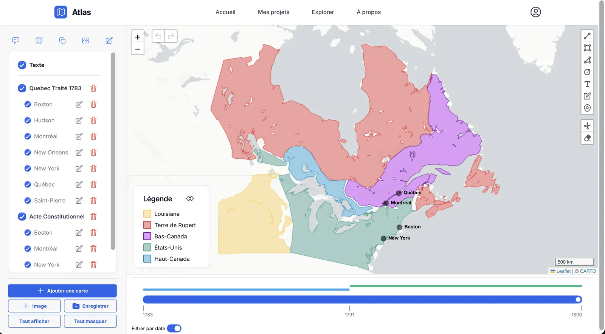
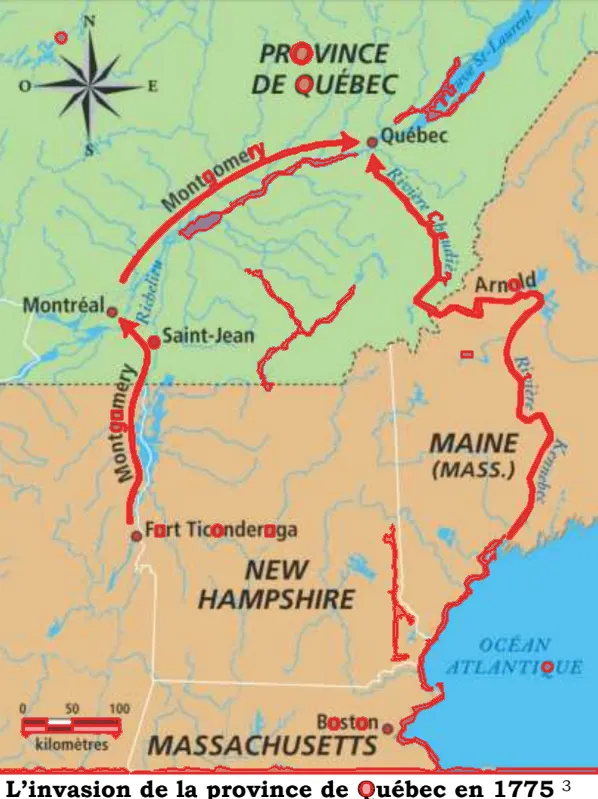
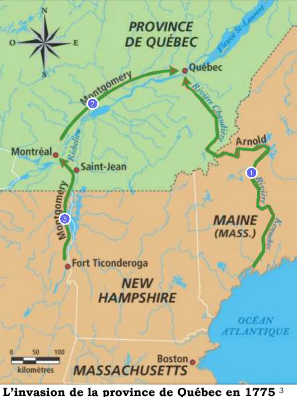

Étude de cas · Projet majeur de conception
Atlas
Une plateforme web libre pour numériser, comparer et partager des cartes historiques en classe.
Technologies

Le problème
Les enseignants d'histoire et de géographie travaillent avec des cartes anciennes surchargées, souvent incomplètes, difficiles à comparer dans le temps et partagées de façon désorganisée.
La solution
Extraction
Importer une carte, en extraire le texte, les couleurs et les formes, puis les repositionner sur une carte du monde standardisée.
Édition
Filtrer, modifier ou enrichir les éléments selon l'objectif du cours.
Ligne du temps
Associer des dates aux cartes pour voir l'évolution d'un territoire.
Bibliothèque
Partager et découvrir les cartes d'autres enseignants.

Mon rôle
Coordination de l'équipe
Carnet de produit et sprints dans Jira, découpage des tâches selon les dépendances entre la plateforme web et les modules d'extraction, suivi des échéances et tableau de bord hebdomadaire.
Extraction de formes
Conception et développement du module qui extrait les formes d'une carte (flèches, territoires, symboles), du sélecteur dans l'interface Vue jusqu'à la tâche Celery en Python et OpenCV.
Déploiement
Mise en ligne sur Oracle Cloud pour 0 $ par mois, en HTTPS, avec un script de déploiement en une commande, des sauvegardes et un retour arrière.
Zoom : l'extraction de formes
Notre premier pipeline était entièrement automatique, mais les cartes anciennes sont très bruitées : rivières, côtes, texte et hachures devenaient autant de formes parasites. Sur une carte de 1775 où l'on attendait 3 flèches, il en trouvait 28, et l'utilisateur devait supprimer le reste à la main.
J'ai comparé trois approches : raffiner le pipeline automatique, intégrer un modèle d'IA de segmentation (MobileSAM) ou laisser l'utilisateur cliquer sur les formes voulues. J'ai retenu la troisième, présentée au client et approuvée : un clic par forme, puis une segmentation par couleur dans l'espace CIE LAB avec deux seuils (hystérésis) pour capter les bords flous sans déborder sur les régions voisines.


La solution est couverte par des tests de régression (pytest) qui simulent un clic par forme de référence et exigent un IoU supérieur à 0,9.
Zoom : le déploiement
Atlas compte une douzaine de services Docker (FastAPI, Vue, PostGIS, Redis, workers Celery et IA, Keycloak). Le défi : le rendre accessible au client sans frais, de façon sécuritaire et facile à redéployer.
- 0 $ par mois sur une instance ARM Oracle Cloud Always Free (4 cœurs, 24 Go).
- Un seul point d'entrée HTTPS via le proxy Caddy et Let's Encrypt, au lieu de quatre ports HTTP exposés.
- Secrets générés automatiquement, conteneurs non-root, console d'administration limitée à certaines adresses IP.
- Une seule commande (deploy.sh) : installation, pare-feu, migrations, sauvegarde de la base de données et vérification de chaque service.
- Retour arrière (rollback.sh) vers la dernière version fonctionnelle, sans perte de données.
Ce que j'en retiens
Atlas m'a confirmé que j'aime autant coordonner que développer : un billet bien rédigé et des dépendances anticipées font gagner du temps à toute l'équipe.
Il m'a aussi appris à appliquer à mes propres tâches la rigueur que je demande aux autres. J'ai poursuivi trop longtemps ma première version de l'extraction de formes avant de changer d'approche. Aujourd'hui, je fixe des critères d'acceptation mesurables et un point de contrôle avant de m'enfoncer dans une solution.